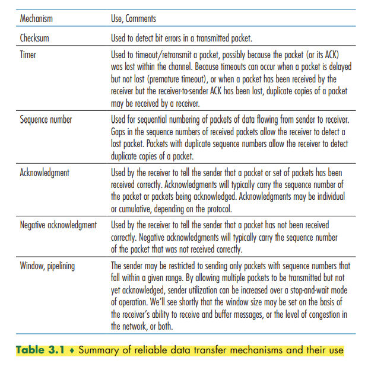

Transport Layer
This contents of this chapter is part of the curriculum for TTM4100, except for the sections 3.6.1 and 3.7.2.
Introduction to the Transport Layer and Transport Layer Services
A transport-layer protocol provides for logical communication between application processes running on different hosts. By logical communication, we mean that from an application’s perspective, it is as if the hosts running the processes were directly connected.
Terminology: Transport-layer segments
Relationship Between Transport and Network Layers

Overview of the Transport Layer in the Internet
UDP (User Datagram Protocol), which provides an unreliable, connectionless service to the invoking application.
TCP (Transmission Control Protocol), which provides a reliable, connection-oriented service to the invoking application.
The IP service model is a best-effort delivery service. This means that IP makes its “best effort” to deliver segments between communicating hosts, but it makes no guarantees. In particular, it does not guarantee segment delivery, it does not guarantee orderly delivery of segments, and it does not guarantee the integrity of the data in the segments. For these reasons, IP is said to be an unreliable service.
Extending host-to-host delivery to process-to-process delivery is called transport-layer multiplexing and demultiplexing.
TCP also provides congestion control.
Multiplexing and Demultiplexing
This job of delivering the data in a transport-layer segment to the correct socket is called demultiplexing. The job of gathering data chunks at the source host from different sockets, encapsulating each data chunk with header information (that will later be used in demultiplexing) to create segments, and passing the segments to the network layer is called multiplexing.
Transport-layer multiplexing requires (1) that sockets have unique identifiers, and (2) that each segment have special fields that indicate the socket to which the segment is to be delivered. These special fields, illustrated in Figure 3.3, are the source port number field and the destination port number field.
When we develop a new application, we must assign the application a port number.
Connectionless Multiplexing and Demultiplexing
It is important to note that a UDP socket is fully identified by a two-tuple consisting of a destination IP address and a destination port number. As a consequence, if two UDP segments have different source IP addresses and/or source port numbers, but have the same destination IP address and destination port number, then the two segments will be directed to the same destination process via the same destination socket.
Connection-Oriented Multiplexing and Demultiplexing
One subtle difference between a TCP socket and a UDP socket is that a TCP socket is identified by a four-tuple: (source IP address, source port number, destination IP address, destination port number).
Web Servers and TCP

Connectionless Transport: UDP
Some applications are better suited for UDP for the following reasons:
- Finer application-level control over what data is sent, and when. (No congestion-control mechanism)
- No connection establishment.
- No connection state. A server devoted to a particular application can typically support many more active clients when the application runs over UDP rather than TCP.
- Small packet header overhead.
It it is possible for an application to have reliable data transfer when using UDP. This can be done if reliability is built into the application itself. QUIC protocol implements reliability in an application-layer protocol on top of UDP.
UDP Segment Structure

UDP Checksum
The UDP checksum provides for error detection.
Principles of Reliable Data Transfer
With a reliable channel, no transferred data bits are corrupted (flipped from 0 to 1, or vice versa) or lost, and all are delivered in the order in which they were sent.
Building a Reliable Data Transfer Protocol
Reliable Data Transfer over a Perfectly Reliable Channel: rdt1.0
Reliable Data Transfer over a Channel with Bit Errors: rdt2.0
Fundamentally, three additional protocol capabilities are required in ARQ protocols to handle the presence of bit errors:
- Error detection
- Receiver feedback
- Retransmission
To enable the receiver to determine whether the packet is a retransmission, we add a sequence number to the data packet.
Reliable Data Transfer over a Lossy Channel with Bit Errors: rdt3.0
The sender does not know whether a data packet was lost, an ACK was lost, or if the packet or ACK was simply overly delayed. In all cases, the action is the same: retransmit. Implementing a time-based retransmission mechanism requires a countdown timer that can interrupt the sender after a given amount of time has expired. The sender will thus need to be able to (1) start the timer each time a packet (either a first-time packet or a retransmission) is sent, (2) respond to a timer interrupt (taking appropriate actions), and (3) stop the timer.
We have now assembled the key elements of a data transfer protocol. Checksums, sequence numbers, timers, and positive and negative acknowledgment packets each play a crucial and necessary role in the operation of the protocol.
Pipelined Reliable Data Transfer Protocols
If we define the utilization of the sender (or the channel) as the fraction of time the sender is actually busy sending bits into the channel, the stop-and-wait protocol has a rather dismal sender utilization,
Pipelining has the following consequences for reliable data transfer protocols:
- The range of sequence numbers must be increased.
- The sender and receiver sides of the protocols may have to buffer more than one packet.
- The range of sequence numbers needed and the buffering requirements will depend on the manner in which a data transfer protocol responds to lost, corrupted, and overly delayed packets. Two basic approaches toward pipelined error recovery can be identified: Go-Back-N and selective repeat.
Go-Back-N (GBN)
In a Go-Back-N (GBN) protocol, the sender is allowed to transmit multiple packets (when available) without waiting for an acknowledgment, but is constrained to have no more than some maximum allowable number, N, of unacknowledged packets in the pipeline.
As the protocol operates, this window slides forward over the sequence number space. For this reason, N is often referred to as the window size and the GBN protocol itself as a sliding-window protocol.
The GBN sender must respond to three types of events:
- Invocation from above. rdt_send(). If the window is not full, a packet is created and sent, and variables are appropriately updated. If the window is full, the sender simply returns the data back to the upper layer
- Receipt of an ACK. An acknowledgment for a packet with sequence number n will be taken to be a cumulative acknowledgment, indicating that all packets with a sequence number up to and including n have been correctly received at the receiver.
- A timeout event. If a timeout occurs, the sender resends all packets that have been previously sent but that have not yet been acknowledged.
A single packet error can cause GBN to retransmit a large number of packets, many unnecessarily.
Selective Repeat (SR)
As the name suggests, selective-repeat protocols avoid unnecessary retransmissions by having the sender retransmit only those packets that it suspects were received in error (that is, were lost or corrupted) at the receiver.
The SR receiver will acknowledge a correctly received packet whether or not it is in order. Out-of-order packets are buffered until any missing packets (that is, packets with lower sequence numbers) are received, at which point a batch of packets can be delivered in order to the upper layer.

Connection-Oriented Transport: TCP
In order to provide reliable data transfer, TCP relies on many of the underlying principles discussed in the previous section, including error detection, retransmissions, cumulative acknowledgments, timers, and header fields for sequence and acknowledgment numbers
The TCP Connection
TCP is said to be connection-oriented because before one application process can begin to send data to another, the two processes must first "handshake" with each other.
TCP protocol runs only in the end systems and not in the intermediate network elements (routers and link-layer switches), the intermediate network elements do not maintain TCP connection state.
A TCP connection provides a full-duplex service: If there is a TCP connection between Process A on one host and Process B on another host, then application-layer data can flow from Process A to Process B at the same time as application-layer data flows from Process B to Process A.
A TCP connection is also always point-to-point, that is, between a single sender and a single receiver. So-called "multicasting" - the transfer of data from one sender to many receivers in a single send operation - is not possible with TCP.
The process that is initiating the connection is called the client process, while the other process is called the server process.
TCP directs this data to the connection’s send buffer, which is one of the buffers that is set aside during the initial three-way handshake. From time to time, TCP will grab chunks of data from the send buffer and pass the data to the network layer.
The maximum amount of data that can be grabbed and placed in a segment is limited by the maximum segment size (MSS). The MSS is typically set by first determining the length of the largest link-layer frame that can be sent by the local sending host (the so-called maximum transmission unit, MTU), and then setting the MSS to ensure that a TCP segment (when encapsulated in an IP datagram) plus the TCP/IP header length (typically 40 bytes) will fit into a single link-layer frame.
TCP Segment Structure

Sequence Numbers and Acknowledgment Numbers
The sequence number for a segment is the byte-stream number of the first byte in the segment.
The acknowledgment number that Host A puts in its segment is the sequence number of the next byte Host A is expecting from Host B.
Because TCP only acknowledges bytes up to the first missing byte in the stream, TCP is said to provide cumulative acknowledgments.
Telnet: A Case Study for Sequence and Acknowledgment Numbers
Note that the acknowledgment for client-to-server data is carried in a segment carrying server-to-client data; this acknowledgment is said to be piggybacked on the server-to-client data segment
Round-Trip Time Estimation and Timeout
Estimating the Round-Trip Time
SampleRTT, for a segment is the amount of time between when the segment is sent (that is, passed to IP) and when an acknowledgment for the segment is received. EstimatedRTT is a weighted average of the SampleRTT values:
EstimatedRTT = (1 – α) * EstimatedRTT + α * SampleRTT
The recommended value of α is α = 0.125. In addition to having an estimate of the RTT, it is also valuable to have a measure of the variability of the RTT. DevRTT is an estimate of how much SampleRTT typically deviates from EstimatedRTT:
DevRTT = (1 – β) * DevRTT + β * | SampleRTT – EstimatedRTT |
The recommended value of β is 0.25.
Setting and Managing the Retransmission Timeout Interval
TCP’s method for determining the retransmission timeout interval:
TimeoutInterval = EstimatedRTT + 4 # DevRTT
An initial TimeoutInterval value of 1 second is recommended.
Reliable Data Transfer
TCP creates a reliable data transfer service on top of IP’s unreliable best effort service.
there are three major events related to data transmission and retransmission in the TCP sender: data received from application above; timer timeout; and ACK receipt.
- TCP receives data from the application, encapsulates the data in a segment, and passes the segment to IP.
- TCP responds to the timeout event by retransmitting the segment that caused the timeout. TCP then restarts the timer.
- TCP compares the ACK value y with its variable SendBase. SendBase–1 is the sequence number of the last byte that has been received correctly and in order at the receiver.
A Few Interesting Scenarios
Doubling the Timeout Interval
Each time TCP retransmits, it sets the next timeout interval to twice the previous value, This modification provides a limited form of congestion control.
Fast Retransmit
When a segment is lost, this long timeout period forces the sender to delay resending the lost packet, thereby increasing the end-to-end delay. Fortunately, the sender can often detect packet loss well before the timeout event occurs by noting so-called duplicate ACKs.
Since TCP does not use negative acknowledgments, the receiver cannot send an explicit negative acknowledgment back to the sender. Instead, it simply reacknowledges (that is, generates a duplicate ACK for) the last in-order byte of data it has received.
If the TCP sender receives three duplicate ACKs for the same data, it takes this as an indication that the segment following the segment that has been ACKed three times has been lost. In the case that three duplicate ACKs are received, the TCP sender performs a fast retransmit, retransmitting the missing segment before that segment’s timer expires.

Go-Back-N or Selective Repeat?
TCP’s error-recovery mechanism is probably best categorized as a hybrid of GBN and SR protocols.
Flow Control
TCP provides a flow-control service to its applications to eliminate the possibility of the sender overflowing the receiver’s buffer.
TCP provides flow control by having the sender maintain a variable called the receive window. Informally, the receive window is used to give the sender an idea of how much free buffer space is available at the receiver.
From time to time, the application process in Host B reads from the buffer. Host B tells Host A how much spare room it has in the connection buffer by placing its current value of rwnd in the receive window field of every segment it sends to A. Initially, Host B sets rwnd = RcvBuffer.
The TCP specification requires Host A to continue to send segments with one data byte when B’s receive window is zero.
TCP Connection Management
Principles of Congestion Control
The Causes and the Costs of Congestion
- Large queuing delays are experienced as the packet-arrival rate nears the link capacity.
- Another cost of a congested network— the sender must perform retransmissions in order to compensate for dropped (lost) packets due to buffer overflow.
- Unneeded retransmissions by the sender in the face of large delays may cause a router to use its link bandwidth to forward unneeded copies of a packet.
- When a packet is dropped along a path, the transmission capacity that was used at each of the upstream links to forward that packet to the point at which it is dropped ends up having been wasted.
Approaches to Congestion Control
At the highest level, we can distinguish among congestion-control approaches by whether the network layer provides explicit assistance to the transport layer for congestion-control purposes:
- End-to-end congestion control. (TCP takes this approach)
- Network-assisted congestion control.
TCP Congestion Control
Classic TCP Congestion Control
The approach taken by TCP is to have each sender limit the rate at which it sends traffic into its connection as a function of perceived network congestion.
The TCP congestion-control mechanism operating at the sender keeps track of an additional variable, the congestion window. cwnd imposes a constraint on the rate at which a TCP sender can send traffic into the network. The amount of unacknowledged data at a sender may not exceed the minimum of cwnd and rwnd,
Because TCP uses acknowledgments to trigger (or clock) its increase in congestion window size, TCP is said to be self-clocking.
TCP answers uses the following guiding principles:
- A lost segment implies congestion, and hence, the TCP sender’s rate should be decreased when a segment is lost.
- An acknowledged segment indicates that the network is delivering the sender’s segments to the receiver, and hence, the sender’s rate can be increased when an ACK arrives for a previously unacknowledged segment.
- Bandwidth probing.
The TCP congestion-control algorithm has three major components: (1) slow start, (2) congestion avoidance, and (3) fast recovery.
Slow Start
In the slow-start state, the value of cwnd begins at 1 MSS and increases by 1 MSS every time a transmitted segment is first acknowledged.
If there is a loss event (i.e., congestion) indicated by a timeout, the TCP sender sets the value of cwnd to 1 and begins the slow start process anew.
When the value of cwnd equals ssthresh, slow start ends and TCP transitions into congestion avoidance mode.
Congestion Avoidance
Rather than doubling the value of cwnd every RTT, TCP adopts a more conservative approach and increases the value of cwnd by just a single MSS every RTT.
A loss event also can be triggered by a triple duplicate ACK event. TCP halves the value of cwnd (adding in 3 MSS for good measure to account for the triple duplicate ACKs received) and records the value of ssthresh to be half the value of cwnd when the triple duplicate ACKs were received. The fast-recovery state is then entered.
Fast Recovery
In fast recovery, the value of cwnd is increased by 1 MSS for every duplicate ACK received for the missing segment that caused TCP to enter the fast-recovery state.
When an ACK arrives for the missing segment, TCP enters the congestion-avoidance state after deflating cwnd. If a timeout event occurs, fast recovery transitions to the slow-start state
TCP Congestion Control: Retrospective
TCP’s congestion control consists of linear (additive) increase in cwnd of 1 MSS per RTT and then a halving (multiplicative decrease) of cwnd on a triple duplicate-ACK event. For this reason, TCP congestion control is often referred to as an additive-increase, multiplicative-decrease (AIMD) form of congestion control.
TCP Cubic
Macroscopic Description of TCP Reno Throughput
During a particular round-trip interval, the rate at which TCP sends data is a function of the congestion window and the current RTT. Average throughput of a connection = 0.75 * W / RTT
Fairness
A congestion control mechanism is said to be fair if the average transmission rate of each connection is approximately R/K; that is, each connection gets an equal share of the link bandwidth.
TCP congestion control converges to provide an equal share of a bottleneck link’s bandwidth among competing TCP connections.
Fairness and UDP
When running over UDP, applications can pump their audio and video into the network at a constant rate and occasionally lose packets, rather than reduce their rates to “fair” levels at times of congestion and not lose any packets. It is possible for UDP sources to crowd out TCP traffic.
Fairness and Parallel TCP Connections
When an application uses multiple parallel connections, it gets a larger fraction of the bandwidth in a congested link.
Evolution of Transport-Layer Functionality
We’ve seen a rich evolution in the use of TCP over the past decade. In addition to “classic” versions of TCP such as TCP Tahoe and Reno, there are now several newer versions of TCP that have been developed, implemented, deployed, and are in significant use today. These include TCP CUBIC, DCTCP, CTCP, BBR, and more.
Perhaps the only common features of these protocols is that they use the TCP segment format and that they should compete “fairly” amongst themselves in the face of network congestion!
QUIC: Quick UDP Internet Connections
QUIC is a new application-layer protocol designed from the ground up to improve the performance of transport-layer services for secure HTTP.
QUIC is an application-layer protocol, using UDP as its underlying transport-layer protocol, and is designed to interface above specifically to a simplified but evolved version of HTTP/2.
Some of QUIC’s major features include:
- Connection-Oriented and Secure.
- Streams. QUIC allows several different application-level “streams” to be multiplexed through a single QUIC connection.
- Reliable, TCP-friendly congestion-controlled data transfer.